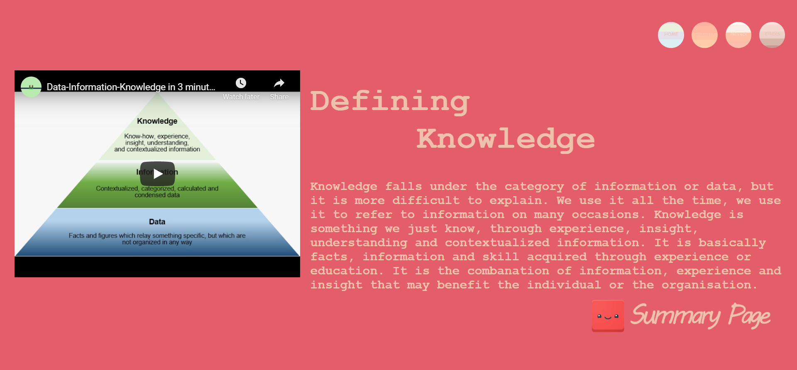

If we haven't met yet... Hi! I'm Abigail, nice to meet you! I just wanted to thank you again for taking the time to visit my site and learn more about me. Even though I am on my third year of my Bachelor of Science in Victoria University, I still have one more trimester left to finish next year. This is due to me initially pursuing a different major in my first year entering University, so at the moment I am seeking an internship or a part-time position.
That aside... let's move onto hopefully more exciting things!


Recently, I had the absolute pleasure to work alongside some pretty amazing people at Summer of Tech's Wellington Create Camp. In just two short days, the team and I presented our app which featured a recent event, Wellington On A Plate, that provides you the best burger recommendation based on certain user inputs.
It was amazing how we went from being a group of strangers initially, to a strong team that brought out the best in each other. This was my first experience putting the technical skills I learnt in University in practice outside of study. I definitely learnt a lot from this weekend and I am very excited to see where my career path will lead me to.
Currently, for a group project in one of my courses, I am a part of a team that helps define system requirements and produce a high-fidelity prototype. With this project, we used our knowledge and skill in Business and System Analysis, User Experience Design and App Development. My team is made up of absolutely amazing individuals. I strongly believe in, not only good work ethic, but amazing team work and this team shares that same beliefs.

I find this course very exciting as it gives us an opportunity to work along side real clients and get to apply our theoretical knowledge to a real problem. Our prototype at the moment is still under works, but we are making amazing progress and will be finalizing it very soon! Once it is done, I hopefully will be able to share it on here!
In a recent project for my Computer Game Development course, Computer Science students were required to pair up with a design student to create any game. From talking to a number of design students it didn't take me long to find someone who I connected with. Not long after we decided to create a Tower Defense Game. I found this project difficult to start initially as it was my first time using Unity, but I quickly got the hang of it and found that I quite enjoyed it.
Below is the little video of the gameplay.
During my second year, for a course we were given the ability to chose a partner to create a high-fidelity prototype of a real estate website. Although it was my first time using JustInMind to build our prototypes, it was quite simple to use.
By clicking a property, it leads you to the property page (photo below), that shows more information about your selected property.
Below shows the map of the selected property and the nearest amentities, if enabled by the user.
I found this course quite helpful as it made me taught me more about UX Designing and Prototyping. Not only that, but it got me familiar to working with a team member instead of just myself.
Going to my first ever website I built using HTML an CSS. It wasn't as much of a challenge as I thought it would be but it was still a mission to do. I quite liked the design of my webpages since I wanted to present the information in a more unique way, unfortunately the person marking our websites didn't share the same mindset. Reflecting back, I probably should have dialed back on the aesthetics of the design.
Still, I am proud to present my first website as I had tons of fun making it!
Looking back, I think I might have a liking to circles.
Last but not least! Initially upon entering University, I was majoring in Computer Science and Computer Graphics. From this I was able to work with Maya, which I found to be quite amazing. Although quickly I found that rendering large files was something my old outdated laptop could not handle, hence the partly rendered photo below. This render took over a full day, resulting in my laptop breaking. Oops.

After the first render, I got myself a new laptop that was much better suited for the job. For our last final render for the course, it was suppose to be something that represented us. I love baking and cooking - oops let me rephrase that, I love eating so naturally baking and cooking followed.